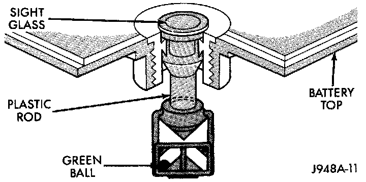
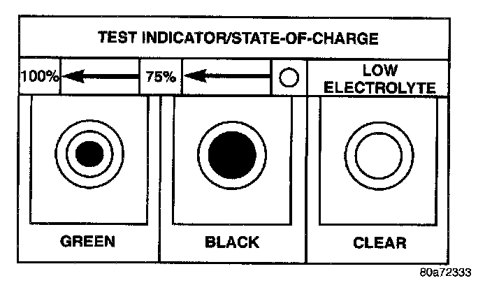

Built-In Test Indicator
Built-In Test Indicator:

A test indicator (hydrometer) built into the top of the battery case provides visual information for battery testing. Like a hydrometer, the built-in test indicator measures the specific gravity of the electrolyte. The test indicator reveals the battery state-of-charge; however, it will not reveal the cranking capacity of the battery. A load test must be performed to determine the battery cranking capacity. See the Load Test procedure for more information.
WARNING:
- IF THE BATTERY SHOWS SIGNS OF FREEZING, LEAKING, LOOSE POSTS, OR LOW ELECTROLYTE LEVEL, DO NOT TEST, ASSIST-BOOST, OR CHARGE. THE BATTERY MAY ARC INTERNALLY AND EXPLODE. PERSONAL INJURY AND/OR VEHICLE DAMAGE MAY RESULT.
- EXPLOSIVE HYDROGEN GAS FORMS IN AND AROUND THE BATTERY. DO NOT SMOKE, USE FLAME, OR CREATE SPARKS NEAR THE BATTERY. PERSONAL INJURY AND/OR VEHICLE DAMAGE MAY RESULT.
- THE BATTERY CONTAINS SULFURIC ACID, WHICH IS POISONOUS AND CAUSTIC. AVOID CONTACT WITH THE SKIN, EYES, OR CLOTHING. IN THE EVENT OF CONTACT, FLUSH WITH WATER AND CALL A PHYSICIAN IMMEDIATELY. KEEP OUT OF THE REACH OF CHILDREN.
- IF THE BATTERY IS EQUIPPED WITH REMOVABLE CELL CAPS, BE CERTAIN THAT EACH OF THE CELL CAPS IS IN PLACE AND TIGHT BEFORE THE BATTERY IS RETURNED TO SERVICE. PERSONAL INJURY AND/OR VEHICLE DAMAGE MAY RESULT FROM LOOSE OR MISSING CELL CAPS.
Before testing, visually inspect the battery for any damage (a cracked case or cover, loose posts, etc.) that would cause the battery to be faulty. In order to obtain correct indications from the built-in test indicator, it is important that the battery be level and have a clean sight glass. Additional light may be required to view the indicator. Do not use open flame as a source of additional light.
Built-In Test Indicator Sight Glass:

To read the built-in test indicator, look into the sight glass and note the color of the indicator. Refer to the following description, as the color indicates:
- Green - indicates 75% to 100% state-of-charge. The battery is adequately charged for further testing or return to use. If the vehicle will not crank for a minimum of fifteen seconds with a fully-charged battery, perform the Load Test procedure.
- Black or Dark indicates 0% to 75% state-of-charge. The battery is inadequately charged and must be charged until a green indication is visible in the sight glass (12.4 Volts or more), before the battery is tested further or returned to service. See the Battery Charging procedure for more information. Also see Abnormal Battery Discharging for possible causes of the discharged condition.
- Clear or Bright - indicates a low electrolyte level. The electrolyte level in the battery is below the test indicator. A maintenance-free battery with non- removable cell caps must be replaced if the electrolyte level is low. Water must be added to a low-maintenance battery with removable cell caps before it is charged. See the Battery Charging procedure for more information. A low electrolyte level may be caused by an overcharging condition.